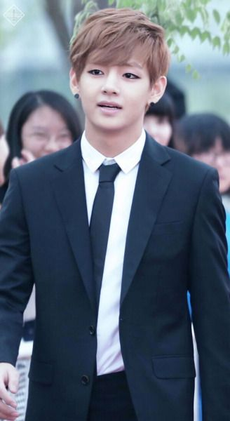

Kim Nam-joon

Kim Nam-Joon who's stage is"RM" was born in Seoul (Sangdo-dong) then he moved to Ilsan, Gyeonggi-do, South Korea when he was 4. His family consists of: Dad, mom, younger sister RM was educated in Apgujeong High School; Global Cyber University Electronic engineering major (bachelor) In 2006 RM studied languages in New Zealand for 4 months. (Bon Voyage 4 – Ep 1) Rm is the leader of bts Pre-debut he had already been performing as an underground rapper, with many tracks released informally, including a collaboration with Zico (Block B). He learned how to speak English, by watching the TV series “Friends”. He’s really smart with an IQ of 148. He was previously ranked in the top 1% of the nation in his high school exams RM is the only member left from the original line up. Namjoon had a dream of being a security guard when he was young.
Kim Seok-Jin

Kim Seok-Jin who's stage name is"Jin" was born in Anyang, Gyeonggi-do, but when he was 1 year old his family moved to Gwacheon, Gyeonggi-do,South Korea His family consists of: Dad, mom, older brother (Kim Seok Joong, 2 years older) He’s from a well off family. His father is the CEO of a company. Jin’s nicknames are: Fake Maknae, Worldwide Handsome, Eat Jin He also learned snowboarding as his father was a ski lover. When his father went in business trips, he used to take Jin with him, so he visited a lot of places like Japan, Europe, Australia etc. Before being streetcast for auditions, he had been a student at Konkuk University, majoring in acting. When he was scouted by BigHit, there were only the 3 rappers there, RM, Suga and J-Hope. Bangtan members name him as the 1st in terms of vocals.
Minyoon-gi
Minyoon-gi who's stage name is"Suga"was born in Buk-gu, Daegu, South Korea. SUGA’s family consists of: Dad, mom, and older brother (Min Geumjae). Suga was educated in Global Cyber University Liberal Arts Major (bachelor). SUGA got his stage name from the CEO because he is pale and his smile is sweet and because it stands for shooting guard,He’s in charge of fixing the things that RM breaks. He changes the light bulbs, etc. Members often call him “grandpa” because he sleeps all the time and he is sometimes cranky.SUGA’s nicknames: Motionless Min because when he has free days, he doesn’t do anything and Mr. Appendix because he had appendicitis surgery in 2013 (December). He was an underground rapper and was in a group called D-Town. When he was an underground rapper he was known as Gloss cause that’s the English translation of Yoongi. SUGA has been making/producing music since he was 13.SUGA’s personality is quite straightforward. When he was younger he wanted to become an architect.
Jung Ho-Seok
Jung Ho-seok whos's stage name is"J-Hope"was born in Gwangju, South Korea. J-Hope’s family consists of: Mom, dad, older sister; Education: Gwangju Global High School; Global Cyber University Before debut J-hope hated doing aegyo but now he changed his mind. Pre-debut J-Hope was a part of a street dance team, called NEURON. He won an underground dance battle and even performed at a festival auditioned for JYP Entertainment, together with B.A.P’s Youngjae and Halo’s Dino. J-Hope’s favorite Color is Green..J-Hope used to be a tennis player in elementary school and played in competitions. He once received a bronze medal, out of 3 team competitors (- 150705 J-Hope`s Q&A from Inkigayo goodbye stage mini fan meeting).When he was younger he was famous in the Gwangju dance underground.” 3 requirements for J-Hope happiness: Family, Health, and Love. [SKOOL LUV AFFAIR KEYWORD
Park Ji-Min
Park Ji-min who's stage name is "Jimin"was born in Busan, South Korea. Jimin’s family conists of: Dad, mom, younger brother Jimin was educated in Busan High School of Arts; Global Cyber University Pre-debut Jimin entered Busan High School of Arts as the top student in modern dance, but later transferred to Korea Arts High School with V. Jimin was the last member to join BTS. His favorite colors are blue and black.He Is known for his abs. He funnily hits his fellow members as a way of showing his affection for them If music is playing he will starts to dance anywhere. When the weather is sunny and cool, Jimin likes wearing earphones while listening to music that gives a good feeling. Jimin became interested in a singing career after watching a Rain performance.According to Jimin, the requirements for his happiness are: love, money and stage. Jimin has black belt in taekwondo.
Kim Tae-hyung
Kim Tae-hyung who's stage name is "V"He was born in Daegu, but later moved to Geochang where he spent his life until he moved to Seoul. V’s family consists of: dad, mom, younger sister and younger brother. V was educated in Korea Art School; Global Cyber University.His favorite color is grey. V’s nickname is TaeTae– Taehyung can dance in high heels.He wanted to become a farmer as his father was a farmer He doesn’t like coffee, but loves hot cocoa. He likes anything that is unique.V loves the brand named Gucci hence he's known as the Gucci Boy.V is one of the mood makers in BTS, along with J-Hope. V likes classical music a lot and he always play classical musics when he sleep.V is interested in photography,If he was not a singer then he would become a photographer V is ranked 1st in the “Top 100 Most Handsome Faces of 2017“.
Jeon Jung-kook
Jeon Jung-kook who's stage name is "Jungkook"was born in Busan, South Korea. Jungkook’s family consists of: Mom, dad, older brother.Jungkook was educated in Seoul School of Performing Arts; Global Cyber University Jungkook attended Seoul performing art high school, he graduated in February 2017.He likes the colour black.He knows teakwondo(he has a black belt). In middle school, he went to Superstar K auditions (where he sang IU’s ‘Lost Child’) but failed to pass the elimination round. On the way back home, he received offers from eight different entertainment agencies. After randomly seeing and falling in love with future member Rap Monster’s rap, he decided to join Big Hit Entertainment. About school subjects, Jungkook does not like everything except Physical Education, Art, and Music Class..